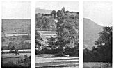
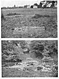

Sacred Texts Legends & Sagas England Index Previous Next
MOUNDS.
The mounds whose many names I have mentioned are artificial. I do not question the fact that they were often used as burial mounds, and perhaps even built with that end in view; but the straight leys on which I find practically all in this district line up (in connection with other sighting points) prove their primary purpose to be sighting tumps. Arthur's Stone, a dolmen, which was probably the core of a burial tump, is on two sighting fines.
I find various stages of evolution of the tump. The small tump at a road junction for the local road construction, examples at Cross in Hand, Belmont, Hungerstone, Shelwick old Turnpike, near Bowley Town (called the Stocks). With most of these the pond from which the earth was dug adjoins. When much larger tumps were wanted the trench of earth to make them was dug in the form of a ring, and a moated tump resulted, as at Eardisland (with water), Pont Hendre, Longtown (dry). The water in these excavations proved to be splendid sighting points by reflection from higher ground, and the moats with no tump but a flat plateau within a ring of water evolved. Many tumps on banks, as at Tre-Fedw, near Pandy, show no excavations Many tumps were at the junction of leys, showing the technical skill of the early surveyors, who must have moved a temporary sighting point on one ley until it fell in the line of a second ley. A sighting tump always commanded a fine, clear view in at least two directions, and in after ages was coveted as a dwelling spot. At Didley is an instance of the simple homestead against it. Thus sighting produced the sites, this being only one of many instances where the record of the ley is embedded in the English tongue. The generic name of Merry Hill applied (as near Hereford) to many tumps gives a clue to their use as assembly points for recreation, confirmed by folk lore and surviving customs of dancing in a circle with hands linked. The folk-mote was held at a tump with a dry moat, so admirably adapted for seating.

Click to enlarge
PLATE V. SIGHTING CUTTINGS
{kind=link}
|
1. Trewyn Camp, Black Mountains. 2. Marstow, Road Spanned by Bridge. 3. Black Darren, Longtown. |

Click to enlarge
PLATE VI. CAUSEWAYS.
{kind=link}
|
1. Through Pond, Ten Houses, Holmer. 2. Through River Monnow, Longtown. |
![g'.г.Ail maiden ©uмонетი: ℞ubli© ძ'ommAin 🖼 ImageI by 'Art'hur R_AckHÅm' & All inclusive names to my Roots && me, me I.B.M.l. ასლაჼ კლდიაშვილი, А©ЛАჼ ©КЛიДиÅWвიЛи [1922], @novadays ი.ბ. АйбоЛит [Aibolem МЕЛОДИЯR₾ი მო'სი'კვÅჼ]](https://barionleg.github.io/db-sacred-texts.li/neu/ba_geo_f.png) |